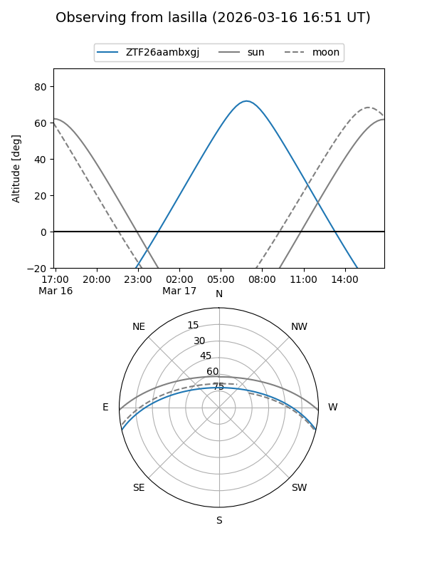
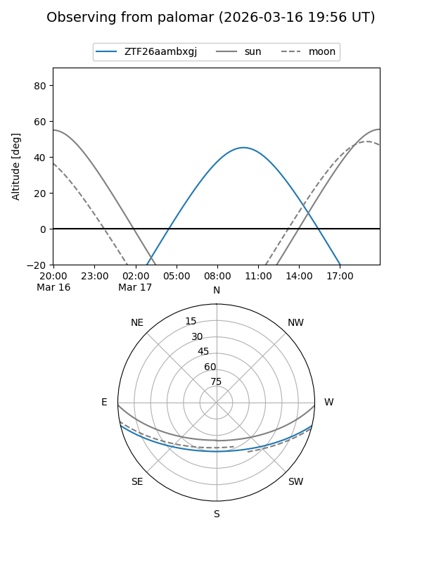

ZTF26aambxgj
Target ZTF26aambxgj at 2026-03-16 13:15
Aliases and brokers:
FINK: link
Lasair: link
ALeRCE: link
alt names
ZTF26aambxgj (ztf,fink_ztf)
Coordinates:
equatorial (ra, dec) = 206.8089,-11.16705
equatorial (HMS+DMS) = 13:47:14.15,-11:10:01.39
galactic (l, b) = (324.2343,+49.38292)
Flags:
Photometry:
last ztfg=16.83
1 ztfg detections
Lightcurve
Visibility


Additional plots